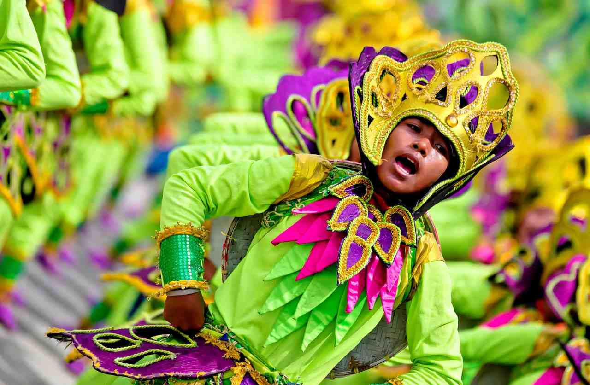

Sandugo Festival takes over Tagbilaran City for the whole of July, but the part most visitors travel for is the street dancing and the Festival of Festivals showdown in the last week of the month. Plan around that weekend, book your room weeks ahead, and pack for rain. Everything else in the month, from the pageant to the trade fair, is a bonus you can fit around it.
The festival is Bohol's way of marking two birthdays at once. July 1 is Tagbilaran's Charter Day and July 22 is Bohol Province Day, so the city government and the Bohol Sandugo Foundation, Inc. stretch the celebration across the weeks between them. The theme, though, reaches back more than four centuries to a single handshake sealed in blood.
Below you'll find what Sandugo actually commemorates, the events that come back almost every year, where to stand for the parade, how to reach Tagbilaran by boat or plane, and the small practical things that make festival week easier on the feet and the wallet.

One blood: the story behind the name
Sandugo is a Visayan word for "one blood." It points to the blood compact of March 16, 1565, when Datu Sikatuna, a Bohol chieftain, and the Spanish navigator Miguel López de Legazpi each drew a little blood, mixed it into wine and drank it as a pledge of friendship. Filipinos learn it in school as the first treaty of friendship between the islands and Spain, and Bohol still calls itself the Friendship Province because of it.
The bronze figures most people photograph stand at the Sandugo Shrine, also called the Eskulturang Sandugo, in the Bo-ol district of Tagbilaran. Many historians place the actual meeting farther east, at Hinawanan Bay in Loay, but the capital became the natural home of the commemoration.
The festival itself is younger than the story. It began in 1989 as part of a national tourism push and slowly grew into the province's biggest July event. It went quiet from 2020 to 2022, came back in 2023, and by 2025 the showdown drew 12 town contingents, twice the number of the year before.
Why a March event is celebrated in July
Visitors often ask this, and the answer is practical rather than historical. The blood compact happened in March, but Charter Day and Province Day both fall in July, so the anniversaries became the frame and the compact became the theme. July 22 is usually declared a non-working holiday in Bohol, which is worth knowing if you need banks or government offices that week.
Events that come back every year
Exact dates shift from year to year. The City Government of Tagbilaran posts the final program on its Facebook page, so check it before you book anything. These are the fixtures you can count on.
Charter Day on July 1
The month opens with a mass, an early-morning diana parade, a motorcade and a program at City Hall. It feels more civic than touristy, but it's the day the food booths and street decorations start appearing downtown.
Miss Bohol Sandugo
The pageant usually lands in mid-July, held at the Bohol Cultural Center or at Island City Mall. It's an indoor evening event with a loyal local following, so tickets go to people who ask early.
Street dancing and the Festival of Festivals showdown
This is the headline. Towns from across the province bring their own local festival to Tagbilaran and perform it in one long parade. The route usually starts near the City Pier or Plaza Rizal and runs along CPG Avenue to the President Carlos P. Garcia Sports Complex, where the ritual showdown happens in the evening. Dancing on the street typically begins mid-afternoon, around 3 or 4 pm.
Each routine tells a town's story, and the costumes lean on raffia, capiz and other local materials. Loboc took the 2025 title with Bolibongkingking, a devotional dance for Our Lady of Guadalupe de Extremadura that recalls how the town survived a cholera outbreak in 1843. If you've only seen Loboc from a river cruise boat, the dance gives the town a very different face, and it's worth reading up on the river works that have changed the Loboc cruise if you plan to visit afterward.
Sidewalk space disappears fast near Island City Mall and Alta Citta. Being on CPG Avenue by 2 pm gives you a fair choice of spots. A cap, a full water bottle and a snack will do more for your afternoon than any camera lens.
The blood compact reenactment
A short staged retelling of the Sikatuna and Legazpi meeting is held near the shrine or within the opening-week program. Crowds are thinner here than at the parade, so it suits anyone who wants the history without the crush.
Trade fair and food expo
For most of the month, the DTI Sandugo product showcase and the OTOP trade expo set up at The Block in Island City Mall. Look for asin tibuok, Bohol's artisanal clay-pot sea salt, plus peanut kisses, woven bags, woodcraft and Bohol-grown coffee. It saves you a day of driving between towns to collect pasalubong.
Tigum Bol-anon sa Tibuok Kalibutan
The worldwide gathering of Boholanos is timed with Sandugo, so families flying home from abroad fill hotels and restaurants well before parade weekend. This homecoming, more than the festival crowd, is why rooms vanish early.
Spending a festival day in Tagbilaran
Tagbilaran is compact, and if you stay central you can walk between most venues. A good shape for the main day is a quiet morning at the Sandugo Shrine before the heat builds, an hour at the National Museum of Bohol for the pre-colonial and Spanish-era backstory, lunch, then the parade route by early afternoon.
Once the last contingent passes, follow the drums to the sports complex. Showdown passes are often handed out by the city or sold cheaply at the gate, but the arrangement changes, so ask at the tourism desk. Missing out isn't a disaster; the music carries outside, and the contingents warming up near the gates are a show of their own. After dark, food stalls gather around the pier and CPG Avenue, and school groups and local bands often play free sets.
Getting to Tagbilaran
The fast craft is the simplest option because it lands you close to where the parade begins. OceanJet and SuperCat both sail between Pier 1 in Cebu City and Tagbilaran Port, a trip of roughly two hours. OceanJet runs the most departures, from early morning to late afternoon. Tourist class has hovered around ₱800 one way and business class around ₱1,200, but fares and timetables change, so check the operator's site when you book. For a fuller look at sailing times and what the crossing is like, see this guide to Bohol ferry times and a day on the island.
For the last weekend of July, buy tickets online at least two days out. Homecoming traffic peaks that week and the popular sailings sell out.
Flying into Bohol-Panglao International Airport works too, with a 30 to 40 minute ride into the city. Already on the island? Buses from Panglao, Tubigon and the towns along the east coast end at the Tagbilaran Integrated Bus Terminal, about ten minutes by tricycle from CPG Avenue.
Rooms, rain and road closures
Hotels close to CPG Avenue and Island City Mall are usually full on parade weekend. Panglao has more beds, but you'll be fighting closed roads and heavy traffic coming back into the city, so leave early. If you'd rather avoid the crowds altogether outside the parade days, the quieter beaches of Anda make a calm second base.
July is wet in Bohol, and short heavy showers in the afternoon are normal. The parade usually carries on through light rain. A packable raincoat is kinder to the people behind you than an open umbrella.
Roads around CPG Avenue and the port close during the street dancing, and tricycles reroute or pause. If you have a boat to catch on parade day, head to the port much earlier than usual and watch the city's page for traffic advisories.
Carry cash in small bills. Most stalls at the trade fair don't take cards, and ATMs on CPG Avenue tend to run dry by the afternoon of the big day.
Be considerate with your camera. Many dancers rehearse for months after work or school, often late into the night, and some treat the performance as a vow to their town's patron saint. Stay on the sidewalk unless a marshal waves you in.
Should your Bohol trip land on Sandugo week?
If your trip is about calm seas and empty beaches, July isn't the month; it sits in the rainy season and the city is at its busiest. If you want to see Boholanos celebrate who they are, away from the usual Chocolate Hills postcard, Sandugo is hard to beat. The province also carries the country's first UNESCO Global Geopark status, and the festival is when local pride in that identity is easiest to see.
A sensible plan is two nights in Tagbilaran around the street dancing, plus one free day for the Chocolate Hills or Loboc. That gives you the noise of the festival and a breather in the countryside, without trying to cram both into a single afternoon.


Comments
No comments yet. Been here recently? Share a tip or ask a question.
Leave a Reply